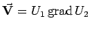
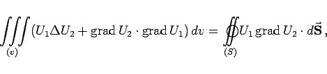
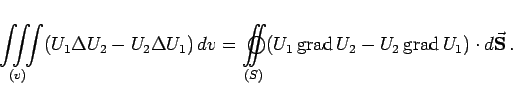
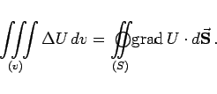
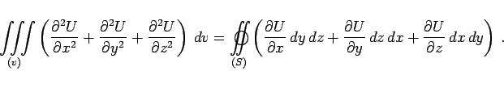
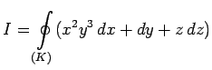
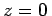
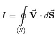
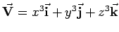
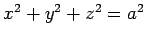

Inhalt Index DeskTop Bronstein

 Vektoranalysis und Feldtheorie Integration in Vektorfeldern Integralsätze
Vektoranalysis und Feldtheorie Integration in Vektorfeldern Integralsätze


Die GREENschen Integralsätze liefern Zusammenhänge zwischen jeweils einem Raum- und einem Flächenintegral. Sie ergeben sich aus der Anwendung des GAUSSschen Satzes auf die Funktion , wobei U1 und U2 skalare Feldfunktionen sind und v das von der Fläche S eingeschlossene Volumen.
|  | (13.121) |
|  | (13.122) |
Speziell für U1 = 1 gilt:
|  | (13.123) |
In kartesischen Koordinaten hat der 3. GREENsche Satz die folgende Form:
|  | (13.124) |
| Beispiel A |
|
Berechnung des Linienintegrals:  mit K als Schnittkurve zwischen dem Zylinder x2+y2=a2 und der Ebene . Nach dem Satz von STOKES erhält man: |
| Beispiel B |
|
Gesucht ist der Fluß  im Strömungsfeld  durch die Oberfläche S der Kugel . Der Satz von GAUSS liefert: |
| Beispiel C |
|
Wärmeleitungsgleichung: Die zeitliche Änderung des Wärmeinhaltes Q eines Raumteiles |